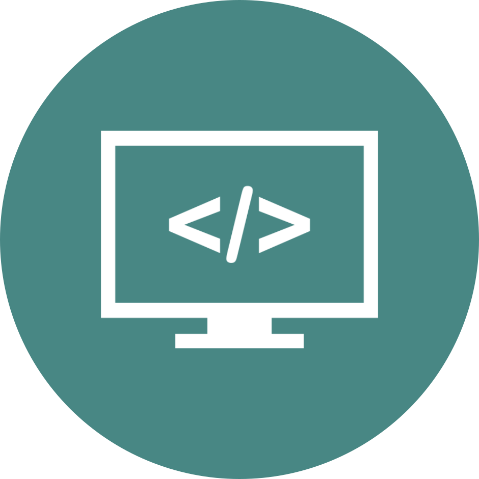
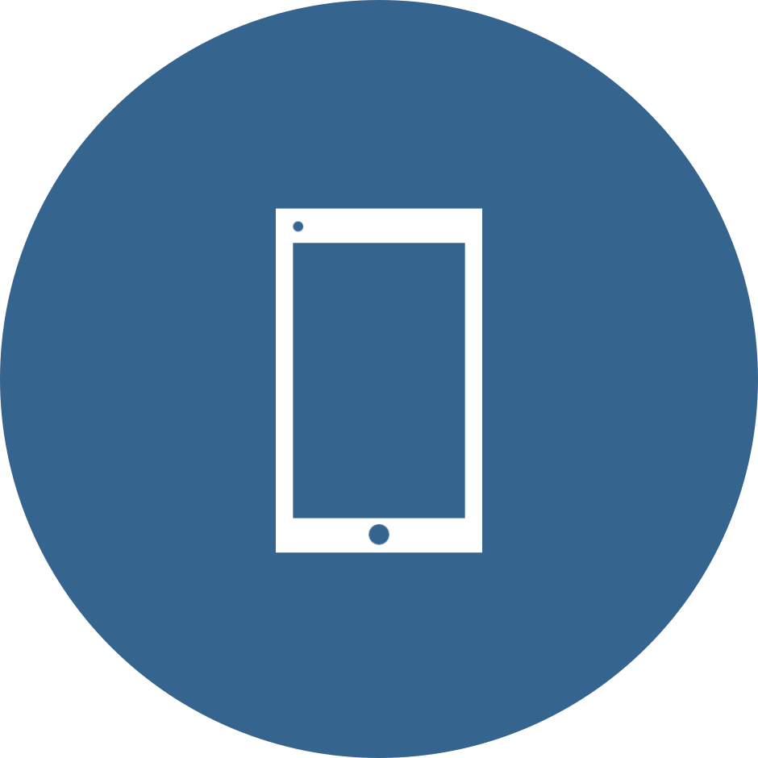
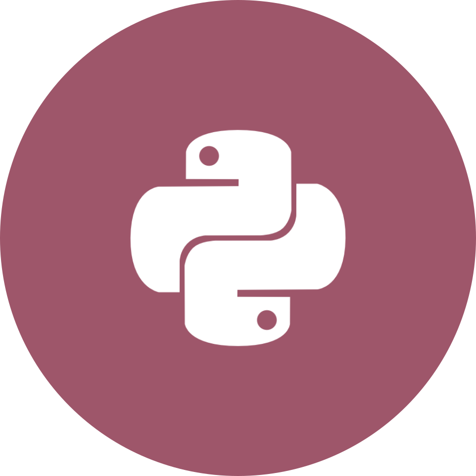
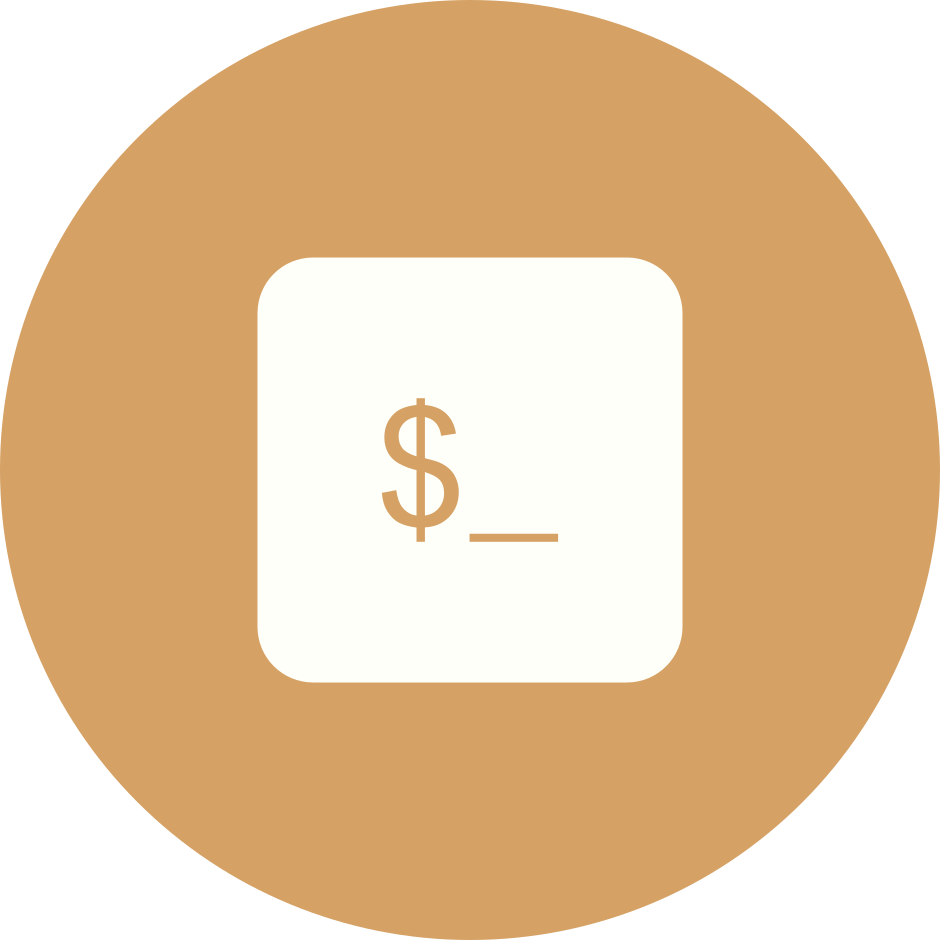

Projects

Web Applications
Completed websites and web applications. Most of these were assigned in CS545 and CS645 at SDSU.

Mobile Applications
Completed and in-progress mobile applications for Android and iOS. Most of these were assigned in CS646 and CS646.01 at SDSU.

Python Scripts
Completed scripts and projects written in Python.

Bash Scripts
(Will update soon)